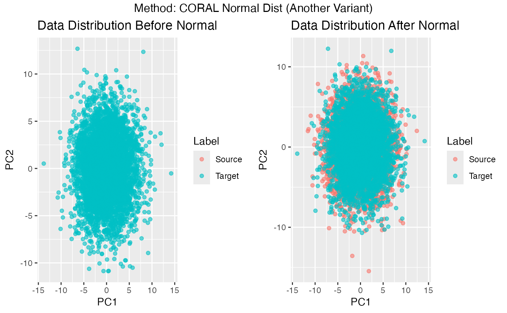

domain_adaptation_coral.RdThe domain_adaptation_coral function aligns the covariance structure of
source and target data by first "whitening" the source data, then "re-coloring"
it using the target covariance matrix. This unsupervised procedure helps reduce
domain shifts by matching second-order statistics (covariances) of the two datasets.
domain_adaptation_coral(source_data, target_data, lambda = 1e-05)A numeric matrix representing the source domain, where rows correspond to observations and columns to features.
A numeric matrix representing the target domain, with the
same number of columns as source_data.
A small positive scalar (default = 1e-5) added to the diagonal of both source and target covariance matrices to stabilize their inverses in high-dimensional or limited-sample cases.
A list containing:
weighted_source_dataThe transformed (whitened + recolored) source data so that its covariance now matches that of the target domain.
target_dataThe original target data, returned for convenience.
# Make sure the `domain_adaptation_coral` function is available,
# e.g., library(DA4BCI) if it's in your DA4BCI package.
# Set random seed
set.seed(123)
# Define parameters for generating source and target data
n_s <- n_t <- 10 # number of samples (in some abstract sense)
fs <- 160 # sampling frequency
t_seconds <- 3 # duration in seconds
# Calculate adjusted sample sizes (rows of the data matrix)
adj_n_s <- n_s * fs * t_seconds
adj_n_t <- n_t * fs * t_seconds
# Generate the source data (src) and target data (tgt)
# - Source data: random normal distribution
# - Target data: random normal distribution with a larger standard deviation (sd = 3)
src <- matrix(rnorm(adj_n_s * 50), adj_n_s, 50)
tgt <- matrix(rnorm(adj_n_t * 50, sd = 3), adj_n_t, 50)
# Perform CORAL domain adaptation
da <- domain_adaptation_coral(src, tgt, lambda = 1e-5)
Z_s <- da$weighted_source_data # aligned source data
Z_t <- da$target_data # original target data (unmodified by CORAL)
# Load visualization libraries
library(ggplot2)
library(gridExtra)
# Compare distributions before and after alignment
plots <- plot_data_comparison(src, tgt, Z_s, Z_t,
description = "Normal")
combined_plot <- grid.arrange(plots$p1, plots$p2, ncol = 2,
top = paste("Method: CORAL",
"Normal Dist (Another Variant)"))

print(combined_plot)
#> TableGrob (2 x 2) "arrange": 3 grobs
#> z cells name grob
#> 1 1 (2-2,1-1) arrange gtable[layout]
#> 2 2 (2-2,2-2) arrange gtable[layout]
#> 3 3 (1-1,1-2) arrange text[GRID.text.124]